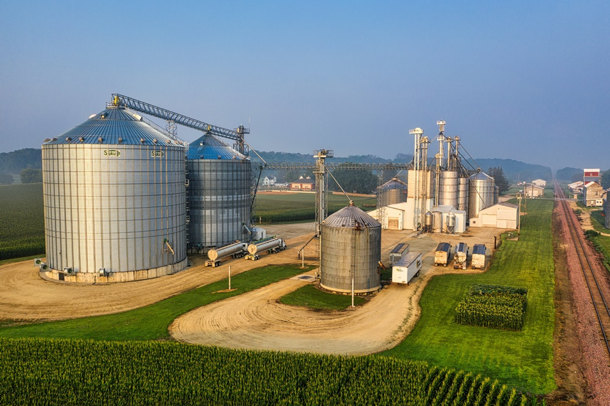
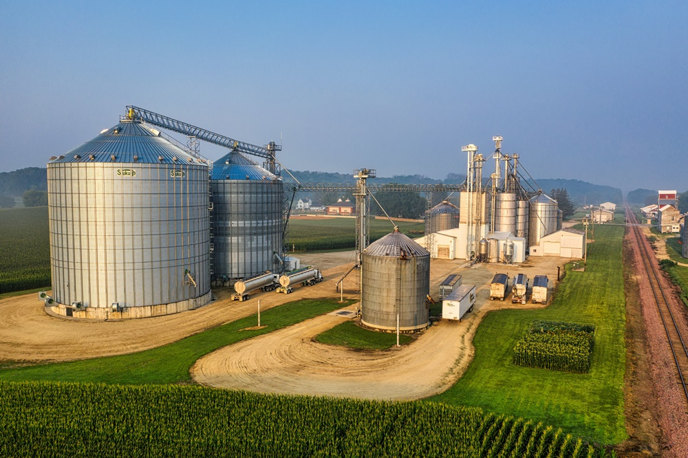

.svg.png)
Inovando o campo com tecnologia para um futuro agrícola sustentável.
Fundação:A AgroTec Engenharia foi fundada há 15 anos com a missão de transformar o setor agrícola por meio de soluções tecnológicas inovadoras. Desde o seu início, a empresa se dedicou a desenvolver sistemas que aumentam a eficiência e a sustentabilidade das lavouras, sempre com um olhar atento às necessidades dos produtores rurais. Ao longo dos anos, a AgroTec se consolidou como uma referência em engenharia agrícola, destacando-se por sua expertise em sistemas de irrigação inteligente, análise de solo e monitoramento de colheitas.
Missão:Nossa missão é fornecer soluções tecnológicas avançadas que permitam aos produtores rurais maximizar a produtividade de suas lavouras, ao mesmo tempo em que promovemos práticas agrícolas sustentáveis. Acreditamos que a inovação e o respeito ao meio ambiente podem caminhar juntos, e trabalhamos incansavelmente para que nossos clientes obtenham os melhores resultados possíveis.
Visão:Ser a empresa líder em engenharia agrícola no Brasil, reconhecida pela excelência de nossos produtos e serviços e pelo impacto positivo que geramos no setor agrícola. Nossa visão é construir um futuro onde a tecnologia esteja ao lado dos produtores rurais, permitindo que eles cultivem de forma mais eficiente e sustentável.
 
